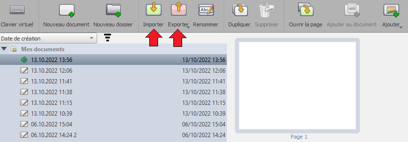

Vous trouverez également dans ce mode deux fonctionnalités très importantes : l'import et l'export.

Import
Vous pouvez importer des fichiers PDF (.pdf), des images (.png, .jpg), des documents OpenBoard (.ubz) ou des dossiers OpenBoard (.ubx), en cliquant sur

À noter que vous pouvez aussi importer un document OpenBoard (.ubz) en double-cliquant dessus. Cela lancera OpenBoard s'il n'est pas déjà lancé, et l'importera (ou proposera un remplacement du fichier si déjà existant).
 Vous pouvez également importer plusieurs éléments à la fois, sans qu'il soit nécessaire de cliquer sur encore et encore.
Vous pouvez également importer plusieurs éléments à la fois, sans qu'il soit nécessaire de cliquer sur encore et encore.
Export
Vous pouvez exporter un document OpenBoard au format PDF ou UBZ, et un dossier OpenBoard au format UBX. Ainsi, vous pouvez, par exemple :
- Enregistrer le travail fait durant un cours, et le partager avec un élève absent.
- Le partager avec d'autres enseignants, ou le sauvegarder sur une clé USB pour l'importer sur un autre ordinateur.
- Importer le travail d'un élève au format PDF, l'annoter, et exporter le document annoté au format PDF pour le renvoyer à l'élève
 Exporter tous vos documents en cliquant sur le dossier racine "Mes Documents", avant de cliquer sur , pour les exporter au format UBX. Vous pourrez alors les importer sur un autre ordinateur. C'est aussi un bon moyen d'effectuer une archive ou une sauvegarde de tout votre travail !
Exporter tous vos documents en cliquant sur le dossier racine "Mes Documents", avant de cliquer sur , pour les exporter au format UBX. Vous pourrez alors les importer sur un autre ordinateur. C'est aussi un bon moyen d'effectuer une archive ou une sauvegarde de tout votre travail !